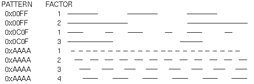
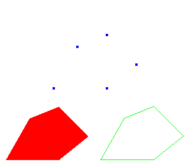
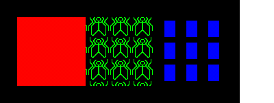

-
x : 0 --> screenWidth - 1
y : 0 --> screenHeight - 1
upper left corner is ( 0, 0 )
These are screen coordinates, screen window
In practice, we may not want to think in terms of pixels. It is more natural to think in terms of x varying from say, -1.0 to 1.0, and y varying from -50.0 to 200.0.
These are world coordinates, the space in which the objects are described.
the rectangular window in world coordinates, specifying which part of the world to be drawn.
a rectangular space defined in the screen window
- a mapping between the world window and the viewport is established
- objects in world window are displayed in viewport
- the viewport can be displayed in anywhere of the screen window
For 2D drawing,
- gluOrtho2D() -- set world window
- glViewport() -- set view ports
Restrict OpenGL to drawing in only part of the window (divides the window)
Default viewport is entire window
Prototypes:
void gluOrtho2D( GLdouble left, GLdouble right, GLdouble bottom, GLdouble top );
void glViewport( GLint x, GLint y, GLint width, GLint height );
Example:
glMatrixMode ( GL_PROJECTION ); glLoadIdentity(); gluOrtho2D( 0.0, 2.0, 0.0, 1.0 ); //set world window glViewport( 40, 60, 300, 200 ); //set viewport
|
|
|||||||||||||||||||||||||
- glutInitWindowSize() -- set screen window size
e.g. glutInitWindowSize( 300, 400 );
- glutInitWindowPosition() -- set screen window position
e.g. glutInitWindowPosition (200,100);
(200, 100) 300 400
glBegin ( GL_POLYGON );
glVertex2f(0.0, 0.0);
glVertex2f(0.0, 3.0);
glVertex2f(4.0, 3.0);
glVertex2f(6.0, 3.0);
glVertex2f(4.0, 3.0);
glEnd();
| Value | Meaning | |
|---|---|---|
| GL_POINTS | Individual points | |
| GL_LINES | independent line segments, each joining two vertices | |
| GL_LINE_STRIP | series of connected line segments | |
| GL_LINE_LOOP | series of connected line segments with a segment added between last and first vertices | |
| GL_TRIANGLES | triangles, each specified by 3 vertices | |
| GL_TRIANGLE_STRIP | linked strip of triangles, a vertex may be shared by 2 or more triangles | |
| GL_TRIANGLE_FAN | linked fan of triagnles, all have a common vertex | |
| GL_QUADS | four-sided polygons, each joining four vertices | |
| GL_QUAD_STRIP | linked strip of quadrilaterals, shared vertices | |
| GL_POLYGON | simple bounded convex polygon |
#sample Makefile for using OpenGL in Linux
PROG = draw
CFLAGS = -w -s -O2 -ansi -DSHM
XLIBS = -lX11 -lXext -lXmu -lXext -lXmu -lXt -lXi -lSM -lICE
LIBS = -lglut -lGLU -lGL
INCLS = -I/usr/X11R/include -I/share/mesa/include
LIBDIR = -L/usr/X11/lib -L/usr/X11R6/lib
#source codes
SRCS = draw_main.cpp draw.cpp
#substitute .cpp by .o to obtain object filenames
OBJS = $(SRCS:.cpp=.o)
#$< evaluates to the target's dependencies,
#$@ evaluates to the target
$(PROG): $(OBJS)
g++ -o $@ $(OBJS) $(LIBDIR) $(LIBS) $(XLIBS)
$(OBJS):
g++ -c $*.cpp $(INCLS)
clean:
rm $(OBJS) $(PROG)
|
void glPointSize( GLfloat size );
- set the width in pixels for rendered point; size > 0.0, default
is 1.0
- Antialiasing disabled ( default )
fractional widths are rounded to integer widths
if size = 2, the dot is 2 pixels by 2 pixels - Antialiasing enabled
a circular group of pixels is drawn
glEnable ( GL_POINT_SMOOTH );
- Wide Lines
void glLineWidth( GLfloat width ); set the width in pixels for rendered line; width > 0.0, default is 1.0- Antialiasing disabled ( default )
fractional widths are rounded to integer widths ( pixels )- Antialiasing enabled
fractional line widths are possible
- Antialiasing disabled ( default )
- Stippled Lines
dotted or dashed lines
void glLineStipple ( GLint factor, GLushort pattern );- sets the current stippling pattern for lines
- pattern is 16-bit number that sets the pattern, 1 => drawing; 0 => no drawing
- facotr ( 1 to 256 ), for repeating pattern
glLineStipple(1, 0x3F07 );
glEnable( GL_LINE_STIPPLE );
0x3F07 = 0011 1111 0000 0111 ( binary )
a line would be drawn with 3 pixels on, 5 off, 6 on, 2 off
glLineStipple(2, 0x3F07 );
a line would be drawn with 6 pixels on, 10 off, 12 on, 4 off
| Pattern | Factor | ||||||
|---|---|---|---|---|---|---|---|
| 0x00FF | 1 | ||||||
| 0x00FF | 2 | ||||||

/*
* lines.c
* This program demonstrates geometric primitives and
* their attributes.
*/
#include <GL/glut.h>
#include <stdlib.h>
#define drawOneLine(x1,y1,x2,y2) glBegin(GL_LINES); \
glVertex2f ((x1),(y1)); glVertex2f ((x2),(y2)); glEnd();
void init(void)
{
glClearColor (0.0, 0.0, 0.0, 0.0);
glShadeModel (GL_FLAT);
}
void display(void)
{
int i;
glClear (GL_COLOR_BUFFER_BIT);
/* select white for all lines */
glColor3f (1.0, 1.0, 1.0);
/* in 1st row, 3 lines, each with a different stipple */
glEnable (GL_LINE_STIPPLE);
glLineStipple (1, 0x0101); /* dotted */
drawOneLine (50.0, 125.0, 150.0, 125.0);
glLineStipple (1, 0x00FF); /* dashed */
drawOneLine (150.0, 125.0, 250.0, 125.0);
glLineStipple (1, 0x1C47); /* dash/dot/dash */
drawOneLine (250.0, 125.0, 350.0, 125.0);
/* in 2nd row, 3 wide lines, each with different stipple */
glLineWidth (5.0);
glLineStipple (1, 0x0101); /* dotted */
drawOneLine (50.0, 100.0, 150.0, 100.0);
glLineStipple (1, 0x00FF); /* dashed */
drawOneLine (150.0, 100.0, 250.0, 100.0);
glLineStipple (1, 0x1C47); /* dash/dot/dash */
drawOneLine (250.0, 100.0, 350.0, 100.0);
glLineWidth (1.0);
/* in 3rd row, 6 lines, with dash/dot/dash stipple */
/* as part of a single connected line strip */
glLineStipple (1, 0x1C47); /* dash/dot/dash */
glBegin (GL_LINE_STRIP);
for (i = 0; i < 7; i++)
glVertex2f (50.0 + ((GLfloat) i * 50.0), 75.0);
glEnd ();
/* in 4th row, 6 independent lines with same stipple */
for (i = 0; i < 6; i++) {
drawOneLine (50.0 + ((GLfloat) i * 50.0), 50.0,
50.0 + ((GLfloat)(i+1) * 50.0), 50.0);
}
/* in 5th row, 1 line, with dash/dot/dash stipple */
/* and a stipple repeat factor of 5 */
glLineStipple (5, 0x1C47); /* dash/dot/dash */
drawOneLine (50.0, 25.0, 350.0, 25.0);
glDisable (GL_LINE_STIPPLE);
glFlush ();
}
void reshape (int w, int h)
{
glViewport (0, 0, (GLsizei) w, (GLsizei) h);
glMatrixMode (GL_PROJECTION);
glLoadIdentity ();
gluOrtho2D (0.0, (GLdouble) w, 0.0, (GLdouble) h);
}
void keyboard(unsigned char key, int x, int y)
{
switch (key) {
case 27:
exit(0);
break;
}
}
int main(int argc, char** argv)
{
glutInit(&argc, argv);
glutInitDisplayMode (GLUT_SINGLE | GLUT_RGB);
glutInitWindowSize (400, 150);
glutInitWindowPosition (100, 100);
glutCreateWindow (argv[0]);
init ();
glutDisplayFunc(display);
glutReshapeFunc(reshape);
glutKeyboardFunc(keyboard);
glutMainLoop();
return 0;
}
|
-
a polygon is a plane figure specified by a set of 3 or more
vertices ( coordinate positions )
- Typically drawn by filling in all pixels enclosed within the boundary ( default )
glPolygonMode( GL_FRONT, GL_FILL );
glPolygonMode( GL_BACK, GL_FILL );
- Can also draw them as outlined polygons
glPolygonMode( GL_FRONT, GL_LINE );
- Or simply drawn as points
glPolygonMode( GL_FRONT, GL_POINT );
- A filled polygon might be solidly filled or stippled with a certain pattern
- By convention polygons whose vertices appear in counterclockwise order
on screen are called front-facing but users can
also make clockwise order as front-facing
glFrontFace( GL_CCW ); //counterclockwise Orientation of vertices is also known as winding.
glFrontFace( GL_CW ); //clockwise
- Culling -- discarding ( ignore ) invisible polygons during rendering
e.g. back faces of an enclosed opaque polygon
enableb by glEnable( GL_CULL_FACE );
glCullFace ( GL_FRONT );
glCullFace ( GL_BACK );
glCullFace ( GL_FRONT_AND_BACK );
Class Exercise:glEnable( GL_CULL_FACE ); glCullFace ( GL_BACK ); glColor3f( 1.0, 0.0, 0.0 ); //red glFrontFace ( GL_CCW ); glPolygonMode( GL_FRONT, GL_FILL ); glBegin( GL_POLYGON ); //draw solid polygon glVertex2i( 0, 0 ); glVertex2i( 0, 100 ); glVertex2i( 100, 100 ); glVertex2i( 100, 0 ); glEnd();What do you expect to see on the display, assuming everything has been initialized properly? - Area
n-1 A = ½ 
xi yi+1 - xi+1 yi i=0
for GL_CCW, if A > 0, => front-facing, otherwise back-facing
for GL_CW, if A < 0, => front-facing, otherwise back-facing - Stippling Polygons
glEnable ( GL_POLYGON_STIPPLE ); setting pattern byvoid glPolygonStipple( const Glubyte *mask );
mask is a 32 x 32 pattern of bits
aligned with the window, thus rotate the polygon won't rotate the stipple pattern - Examples
Drawing polygons with different modes
int x0, y0; glColor3f( 1.0, 0.0, 0.0 ); //red glPolygonMode( GL_FRONT, GL_FILL ); glBegin( GL_POLYGON ); //draw solid polygon glVertex2i( 10, 10 ); glVertex2i( 100, 10 ); glVertex2i( 150, 50 ); glVertex2i( 100, 100 ); glVertex2i( 50, 80 ); glVertex2i( 10, 10 ); glEnd(); x0 = 160; glColor3f( 0.0, 1.0, 0.0 ); //green glPolygonMode( GL_FRONT, GL_LINE ); glBegin( GL_POLYGON ); //draw polygon glVertex2i( x0+10, 10 ); glVertex2i( x0+100, 10 ); glVertex2i( x0+150, 50 ); glVertex2i( x0+100, 100 ); glVertex2i( x0+50, 80 ); glVertex2i( x0+10, 10 ); glEnd(); x0 = 80; y0 = 120; glColor3f( 0.0, 0.0, 1.0 ); //blue glPolygonMode( GL_FRONT, GL_POINT ); glBegin( GL_POLYGON ); //draw polygon points glVertex2i( x0+10, y0+10 ); glVertex2i( x0+100, y0+10 ); glVertex2i( x0+150, y0+50 ); glVertex2i( x0+100, y0+100 ); glVertex2i( x0+50, y0+80 ); glVertex2i( x0+10, y0+10 ); glEnd();
simple ( standard ) polygons -- polygons whose edges do not cross
back face -- the side of a polygon that faces into the object interior
front face -- the visible, outward side
Each polygon in a scene is contained within a plane of infinite extent
Stippled Polygons
|
 |
void glBitmap( GLsizei width, GLsizei height, GLfloat xorig, GLfloat yorig, GLfloat xmove, GLfloat ymove, const GLubyte * bitmap);